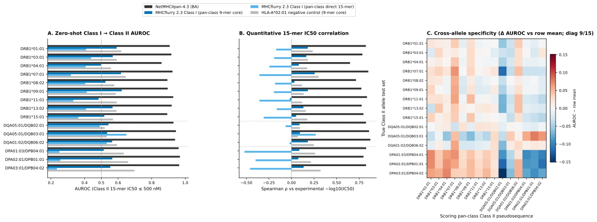

Experiment 2026-11-25: Speculative pan-class Class I → Class II transfer via mhcseqs IMGT alignments
Date: 2026-11-25
Software: mhcflurry 2.5.9, frozen Class I 2.3.0 weights (models_class1_presentation), mhcseqs IMGT pan-class G-DOMAIN aligner, NetMHCIIpan-4.3 (BA and EL), hitlist quantitative Class II IC50 dataset
Goal: Test whether structurally equivalent 39-aa Class II binding-groove pseudosequences—extracted through mhcseqs’s shared pan-class IMGT G-DOMAIN numbering (G-ALPHA1 ↔ G-ALPHA, G-ALPHA2 ↔ G-BETA)—allow frozen Class I MHCflurry 2.3.0 weights (trained exclusively on Class I MHC) to predict Class II 15-mer binding affinity zero-shot, compared head-to-head against NetMHCIIpan-4.3 and an unrelated Class I negative control (HLA-A*02:01).
Bottom line: Negative result — informative and clean. Frozen Class I MHCflurry weights do not transfer across the Class I / Class II structural boundary (mean AUROC = 0.551 with 9-mer core scanning vs 0.598 for HLA-A*02:01 negative control and 0.923 for NetMHCIIpan-4.3 BA), and direct 15-mer scoring is systematically anti-correlated (mean AUROC = 0.394, Spearman ρ = -0.224; down to 0.235 / ρ = -0.521 on HLA-DP). Cross-allele specificity shows zero diagonal enrichment (mean diag 0.551 vs mean off-diag 0.556, Δ = -0.005), proving that pan-class transfer requires joint pan-class training rather than zero-shot weight reuse.
1. Methodology: pan-class IMGT coordinate mapping
Because MHC Class I (α1/α2 heavy chain) and Class II (α1 from DRA/DQA1/DPA1, β1 from DRB1/DQB1/DPB1) share the homologous G-DOMAIN fold, mhcseqs.align_domain_to_imgt(...) aligns all four domains onto the same 3D Kabsch-calibrated IMGT G-DOMAIN coordinate system:
α1 half (
22of39MHCflurry positions): MapHLA-A*02:01G-ALPHA1mature positions (7, 9, 16, 19, 21, 24, 45, 47, 59, 62, 63, 66, 67, 69, 70, 73, 74, 76, 77, 80, 81, 84) into their IMGT G-DOMAIN coordinates, then extract the structurally equivalent residues from Class IIG-ALPHA(HLA-DRA*01:01,HLA-DQA1*,HLA-DPA1*).α2 / β1 half (
17of39MHCflurry positions): MapHLA-A*02:01G-ALPHA2mature positions (91, 95, 97, 99, 114, 116, 118, 143, 147, 150, 152, 156, 158, 159, 163, 167, 171) into their IMGT G-DOMAIN coordinates, then extract the structurally equivalent residues from Class IIG-BETA(HLA-DRB1*,HLA-DQB1*,HLA-DPB1*).Occupancy:
36 / 39positions are directly occupied across Class II heterodimers; only3Class I-specific α1 loop positions (mature 16, 19, 59→ IMGTG-ALPHA1positions absent in Class IIG-ALPHA) are padded with"X".
Benchmark dataset & scoring modes
From hitlist quantitative Class II binding data (30,381 unique (allele, 15-mer) quantitative IC50 nM pairs across 15 HLA-DR, HLA-DQ, and HLA-DP alleles), we sampled 500 unique 15-mer peptides per allele (7,500 total pairs; binary binder threshold IC50 ≤ 500 nM, plus full continuous Spearman ρ against -log10(IC50)):
NetMHCIIpan-4.3 (BA)andNetMHCIIpan-4.3 (EL)— gold-standard pan-specific Class II reference models (exactDRB1_*/HLA-DQA1*-DQB1*/HLA-DPA1*-DPB1*allele names).MHCflurry 2.3 Class I (pan-class 9-mer core)— register each Class II pan-class 39-aa pseudosequence on frozen2.3.0Class I weights and take the strongest predicted IC50 (min IC50) across the 7 overlapping 9-mer binding cores inside each 15-mer.MHCflurry 2.3 Class I (pan-class direct 15-mer)— pass the full 15-mer directly into frozen2.3.0Class I weights (which internally encode 15-mers as a bulging closed-groove peptide with pinned N- and C-termini).HLA-A*02:01negative control (9-mer coreanddirect 15-mer) — score the exact same 15-mers using an unrelated human Class I groove to separate generic peptide hydrophobicity/composition effects from genuine Class II groove recognition.
2. Summary results across 15 HLA-DR / DQ / DP alleles

Panels A and B: per-allele AUROC (IC50 <= 500 nM) and continuous Spearman rank correlation against experimental -log10(IC50) across 15 HLA Class II alleles (500 15-mers each). Panel C: 15x15 cross-allele specificity matrix (AUROC minus row mean using pan-class 9-mer core scoring), showing column-dominated vertical bands rather than diagonal groove specificity.
Method |
Scoring mode |
Mean AUROC ( |
Mean Spearman |
Interpretation |
|---|---|---|---|---|
|
Native Class II BA |
0.923 |
+0.801 |
Reference ceiling on quantitative 15-mer IC50 |
|
Native Class II EL |
0.763 |
+0.493 |
Eluted-ligand score on binding-affinity assay |
|
9-mer core ( |
|
|
Shared hydrophobic-core composition baseline |
Frozen Class I MHCflurry |
Pan-class 9-mer core |
|
|
Below |
|
Direct 15-mer |
|
|
Closed-groove N/C terminus mismatch |
Frozen Class I MHCflurry |
Pan-class direct 15-mer |
|
|
Anti-correlated (down to |
3. Complete per-allele breakdown (15 alleles, 500 15-mers each)
Allele |
Locus |
Binders ( |
|
|
MHCflurry 9-mer core (AUROC / |
|
MHCflurry direct 15-mer (AUROC / |
|---|---|---|---|---|---|---|---|
|
DR |
301 / 500 |
0.908 / +0.824 |
0.734 / +0.481 |
0.592 / +0.180 |
0.619 / +0.235 |
0.410 / -0.170 |
|
DR |
128 / 500 |
0.918 / +0.785 |
0.793 / +0.544 |
0.568 / +0.163 |
0.592 / +0.183 |
0.438 / -0.192 |
|
DR |
173 / 500 |
0.859 / +0.649 |
0.730 / +0.360 |
0.498 / +0.081 |
0.557 / +0.174 |
0.406 / -0.245 |
|
DR |
244 / 500 |
0.924 / +0.851 |
0.760 / +0.525 |
0.617 / +0.257 |
0.645 / +0.300 |
0.319 / -0.355 |
|
DR |
161 / 500 |
0.894 / +0.714 |
0.721 / +0.433 |
0.525 / +0.033 |
0.577 / +0.116 |
0.404 / -0.183 |
|
DR |
207 / 500 |
0.896 / +0.774 |
0.772 / +0.511 |
0.622 / +0.181 |
0.586 / +0.135 |
0.413 / -0.195 |
|
DR |
202 / 500 |
0.929 / +0.836 |
0.818 / +0.631 |
0.484 / -0.018 |
0.592 / +0.117 |
0.333 / -0.356 |
|
DR |
193 / 500 |
0.920 / +0.777 |
0.652 / +0.367 |
0.567 / +0.133 |
0.591 / +0.159 |
0.409 / -0.163 |
|
DR |
206 / 500 |
0.893 / +0.797 |
0.768 / +0.529 |
0.518 / +0.052 |
0.569 / +0.176 |
0.363 / -0.308 |
|
DQ |
104 / 500 |
0.930 / +0.825 |
0.797 / +0.555 |
0.543 / +0.089 |
0.521 / +0.095 |
0.491 / -0.065 |
|
DQ |
238 / 500 |
0.945 / +0.859 |
0.807 / +0.610 |
0.534 / +0.093 |
0.531 / +0.070 |
0.650 / +0.269 |
|
DQ |
151 / 500 |
0.940 / +0.873 |
0.805 / +0.580 |
0.565 / +0.181 |
0.593 / +0.247 |
0.532 / -0.021 |
|
DP |
84 / 500 |
0.961 / +0.827 |
0.840 / +0.519 |
0.514 / +0.087 |
0.634 / +0.262 |
0.250 / -0.521 |
|
DP |
85 / 500 |
0.969 / +0.797 |
0.694 / +0.351 |
0.566 / +0.076 |
0.660 / +0.215 |
0.255 / -0.398 |
|
DP |
76 / 500 |
0.964 / +0.826 |
0.745 / +0.401 |
0.553 / +0.135 |
0.697 / +0.322 |
0.235 / -0.459 |
Mean (15 alleles) |
— |
167 / 500 |
0.923 / +0.801 |
0.763 / +0.493 |
0.551 / +0.115 |
0.598 / +0.187 |
0.394 / -0.224 |
4. Three mechanistic takeaways
9-mer core scanning recovers peptide-level hydrophobicity, not Class II groove specificity. Taking
min IC50over the seven 9-mer substrings lifts AUROC from0.394to0.551, because Class II 15-mer binders generally contain an internal hydrophobic anchor core (P1aromatic/aliphatic) that Class I predictors also favor in 9-mers. However,HLA-A*02:01alone scores higher (0.598vs0.551) on the identical peptides, showing that the pan-class Class II pseudosequences are out-of-distribution for Class I weights.Direct 15-mer scoring fails catastrophically on HLA-DP (
AUROC = 0.235–0.255,ρ = -0.40 to -0.52). Class I MHC binds 15-mers in a closed groove by pinning the exact N- and C-terminal residues and bulging the middle out, whereas Class II MHC binds an open groove where the 9-mer core sits anywhere inside the 15-mer with overhangs extending out both ends. On HLA-DP (whoseP1/P6aromatic anchors sit inside the 15-mer while terminal overhangs are frequently charged/polar), Class I’s fixed-terminus encoding actively penalizes true binders.Zero diagonal transfer in the
15 × 15specificity matrix proves joint training is required. In Panel C, the mean on-diagonal AUROC (0.551) is slightly below the mean off-diagonal AUROC (0.556,Δ = -0.005, diagonal beats off-diagonal on only9 / 15rows). The strong vertical stripes (e.g.,DRB1*07:01scoring higher on nearly every row whileDQA05:01/DQB02:01andDPscore lower on nearly every row) confirm that frozen Class I weights respond to global sequence-distribution shifts across the 39-aa vector rather than decoding Class II pocket chemistry (P1/P4/P6/P9vs Class IP2/P9). Conversely,mhcseqs’s shared 3D IMGT G-DOMAIN coordinate system gives us a clean, structurally aligned representation ready for joint pan-class training in a future architecture (where a model sees both Class I closed-groove and Class II open-groove binding modes during training).